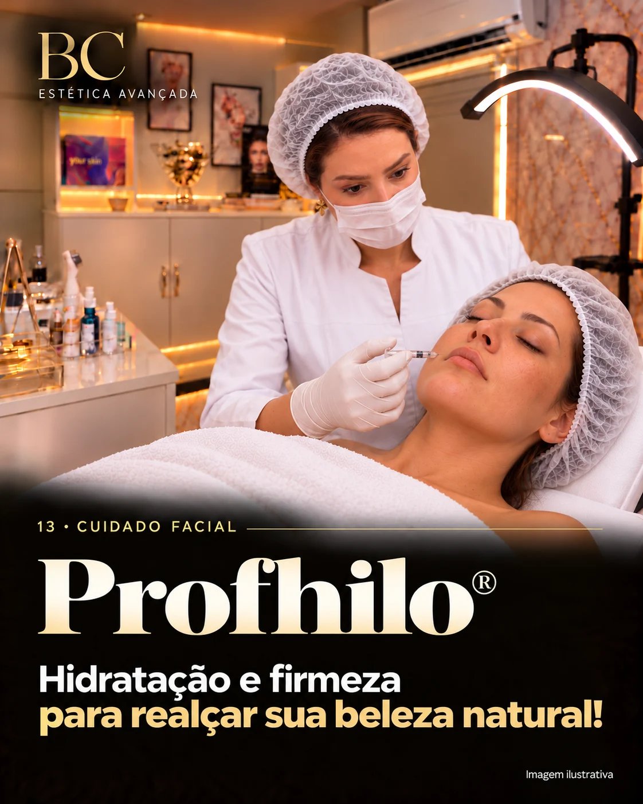
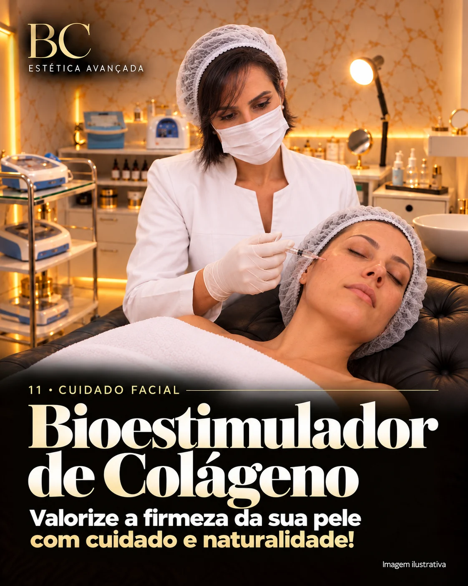
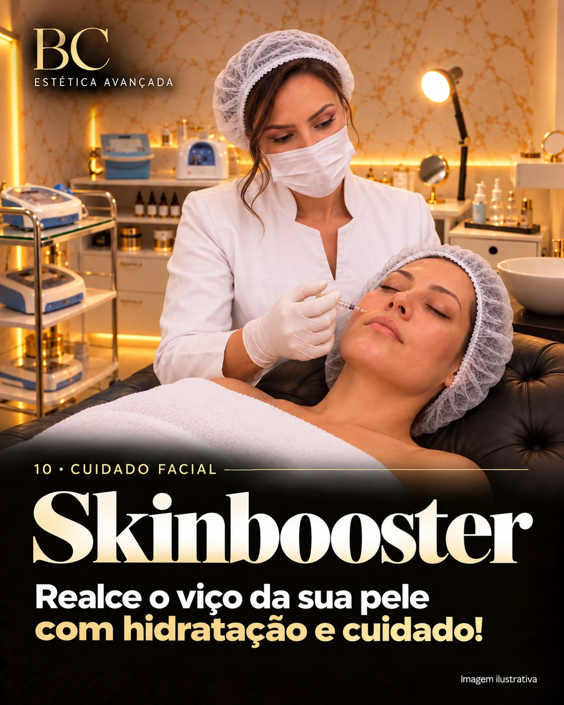
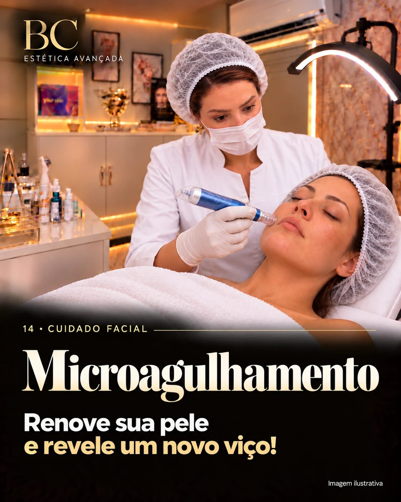
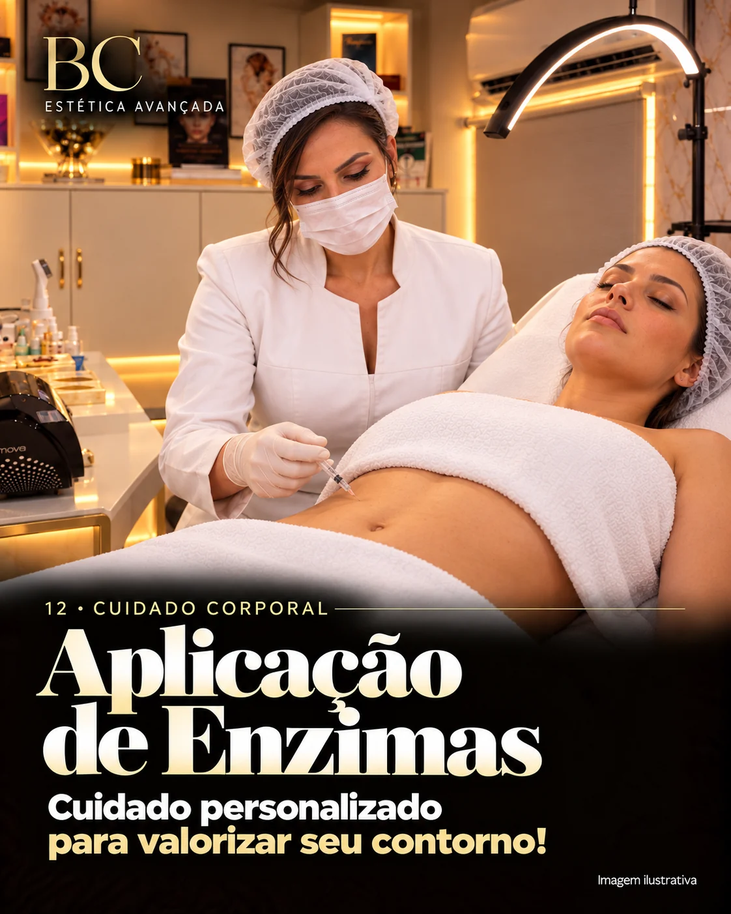
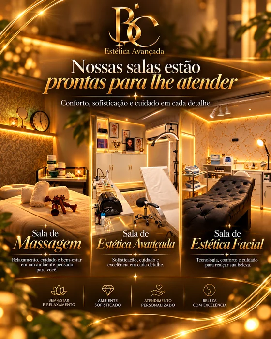

01 · Expressão
Toxina Botulínica
Terço superior, Full Face e Nefertiti fazem parte da mesma família, com planejamentos diferentes conforme a anatomia.
Conheça nossos cuidados faciais, corporais e capilares. A avaliação individual orienta a escolha da técnica, da combinação e do número de sessões que fazem sentido para cada objetivo.
Agendar avaliação
Uma visão rápida dos principais eixos de cuidado. Os vídeos entram conforme a mídia de cada tema é aprovada; até lá, a apresentação permanece leve e visual.
Terço superior, Full Face e Nefertiti fazem parte da mesma família, com planejamentos diferentes conforme a anatomia.

Planejamento facial individualizado para trabalhar contorno, volumes e proporções preservando as características pessoais.

Estratégia voltada ao estímulo progressivo de colágeno e à qualidade da pele, conforme avaliação profissional.

Tratamentos relacionados à hidratação e à qualidade da pele, com produtos, mecanismos e indicações que não são equivalentes.

Um eixo de cuidados para textura e renovação que pode incluir microagulhamento, peelings e estratégias despigmentantes.
Tecnologias de firmeza atuam de maneiras diferentes e são escolhidas conforme região, objetivo e características da pele.

Cuidados corporais combinam recursos diferentes conforme o objetivo de firmeza, contorno e qualidade da pele.
Os grupos abaixo facilitam a navegação. Dentro de cada família, as técnicas continuam descritas separadamente para deixar claro o que muda entre elas.
Planejamento para suavizar temporariamente linhas de expressão e equilibrar a dinâmica muscular.
Terço Superior: testa, glabela e região dos olhos, conforme avaliação.
Full Face: planejamento em diferentes regiões da face de acordo com anatomia e objetivo.
Nefertiti: abordagem da região inferior da face e pescoço, incluindo platisma quando indicado.
Agendar avaliação
Cuidados para higiene, textura, luminosidade, oleosidade e uniformidade do tom.
Limpeza de Pele: higienização profunda e remoção de impurezas conforme o tipo de pele.
Limpeza + Peeling: associa limpeza com renovação superficial escolhida após avaliação.
Peeling: renovação controlada com protocolo selecionado profissionalmente.
Black Peel: protocolo de renovação com ativos específicos.
Despigmentação: estratégia direcionada a alterações de pigmentação, conforme avaliação.
Agendar avaliaçãoEstratégias voltadas ao viço, hidratação, elasticidade e qualidade global da pele.
Skinbooster: pequenas aplicações de ácido hialurônico ou substâncias indicadas para hidratação e qualidade da pele.
Profhilo®: tratamento à base de ácido hialurônico voltado à biorremodelação. Não é o mesmo procedimento que Skinbooster.
Reset Glow™ e Monaco Glow™: protocolos autorais relacionados a revitalização e qualidade da pele, combinados conforme avaliação.
Agendar avaliaçãoCuidados que buscam estimular renovação, firmeza e melhora progressiva da textura.
Bioestimulador de Colágeno: substâncias selecionadas para estimular progressivamente a produção de colágeno.
Microagulhamento: microperfurações controladas que ativam processos naturais de renovação.
Skin Reset™: protocolo integrado que pode combinar tecnologias, bioestimulação e microagulhamento.
Agendar avaliaçãoPlanejamento individualizado para cuidar de volumes, contorno e proporções respeitando a identidade facial.
Harmonização / Preenchimento: pode utilizar ácido hialurônico em pontos definidos após avaliação anatômica.
Face Reset™: protocolo autoral que pode combinar toxina botulínica e preenchimento de forma estratégica.
Indicação, produto, quantidade e regiões são definidos individualmente.
Agendar avaliaçãoRecursos selecionados para firmeza, contorno e qualidade da pele de acordo com profundidade e região.
Ultrassom Microfocado: utiliza ultrassom concentrado em profundidades específicas.
Radiofrequência / Criofrequência: trabalham energia térmica com características próprias de cada equipamento.
Jato de Plasma: atua em cuidados localizados próximos à superfície. Essas tecnologias têm mecanismos e indicações diferentes e não são substitutas automáticas entre si.
Agendar avaliaçãoRecursos corporais e manuais são planejados de acordo com região, objetivo e resposta individual.
Estratégias personalizadas para firmeza, contorno e cuidado de regiões específicas.
Sculpt Cryo™: protocolo autoral de contorno corporal com tecnologia selecionada conforme avaliação.
Aplicação de Enzimas / Intradermoterapia: aplicações localizadas de ativos escolhidos conforme objetivo e indicação.
Papada: cuidado da região submentoniana definido após avaliação de volume, flacidez e características da pele.
Agendar avaliação
Técnicas manuais escolhidas conforme a necessidade de relaxamento, inchaço ou contorno.
Relaxante: voltada à tensão corporal e sensação de descanso.
Drenagem: cuidado manual para inchaço, retenção e sensação de leveza.
Redutora / Modeladora: técnica manual voltada ao contorno dentro de um planejamento individualizado.
Agendar avaliaçãoProtocolos capilares e cuidados localizados entram no planejamento após avaliação da região e da necessidade individual.

Cuidados personalizados para couro cabeludo, fios e sobrancelhas conforme avaliação.
Fort Hair™: protocolo capilar com ativos e tecnologias selecionados após avaliação.
Fort Hair Plus™: versão intensiva que pode combinar recursos adicionais e cuidados domiciliares.
Fort Brow™: protocolo direcionado a sobrancelhas com falhas ou redução de densidade.
Agendar avaliação
Tratamentos direcionados a características particulares da pele e pigmentos.
Estrias: técnicas escolhidas conforme tipo, cor, profundidade e localização.
Vasinhos: cuidado direcionado a pequenos vasos superficiais, conforme avaliação profissional.
Remoção a Laser: tecnologia direcionada a pigmentos de tatuagens ou micropigmentações; a resposta depende de cor, profundidade e pigmento.
Agendar avaliaçãoProtocolos desenvolvidos para combinar técnicas e tecnologias de acordo com cada objetivo, sempre a partir da avaliação individual.
Cuidado capilar personalizado.
Abordagem capilar intensiva.
Cuidado direcionado às sobrancelhas.
Planejamento de contorno corporal.
Revitalização, hidratação e viço.
Qualidade global da pele.
Estratégia integrada para a pele.
Planejamento facial com naturalidade.